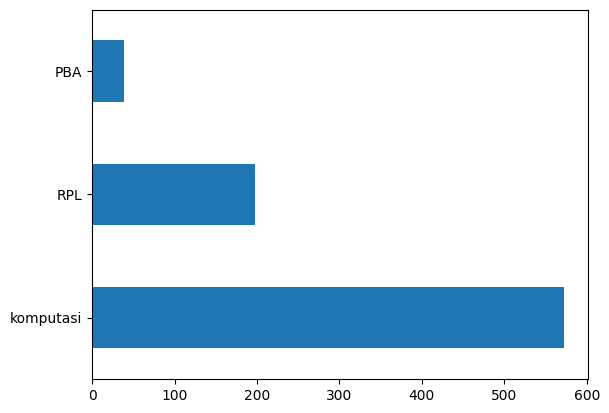

UTS PTA#
import numpy as np
import pandas as pd
# df = pd.read_excel('PTA_crawl.xlsx')
df = pd.read_csv('Data_TA.csv')
df.head()
FileNotFoundErrorTraceback (most recent call last)
<ipython-input-2-054e8e17f655> in <cell line: 2>()
1 # df = pd.read_excel('PTA_crawl.xlsx')
----> 2 df = pd.read_csv('Data_TA.csv')
3
4 df.head()
/usr/local/lib/python3.10/dist-packages/pandas/util/_decorators.py in wrapper(*args, **kwargs)
209 else:
210 kwargs[new_arg_name] = new_arg_value
--> 211 return func(*args, **kwargs)
212
213 return cast(F, wrapper)
/usr/local/lib/python3.10/dist-packages/pandas/util/_decorators.py in wrapper(*args, **kwargs)
329 stacklevel=find_stack_level(),
330 )
--> 331 return func(*args, **kwargs)
332
333 # error: "Callable[[VarArg(Any), KwArg(Any)], Any]" has no
/usr/local/lib/python3.10/dist-packages/pandas/io/parsers/readers.py in read_csv(filepath_or_buffer, sep, delimiter, header, names, index_col, usecols, squeeze, prefix, mangle_dupe_cols, dtype, engine, converters, true_values, false_values, skipinitialspace, skiprows, skipfooter, nrows, na_values, keep_default_na, na_filter, verbose, skip_blank_lines, parse_dates, infer_datetime_format, keep_date_col, date_parser, dayfirst, cache_dates, iterator, chunksize, compression, thousands, decimal, lineterminator, quotechar, quoting, doublequote, escapechar, comment, encoding, encoding_errors, dialect, error_bad_lines, warn_bad_lines, on_bad_lines, delim_whitespace, low_memory, memory_map, float_precision, storage_options)
948 kwds.update(kwds_defaults)
949
--> 950 return _read(filepath_or_buffer, kwds)
951
952
/usr/local/lib/python3.10/dist-packages/pandas/io/parsers/readers.py in _read(filepath_or_buffer, kwds)
603
604 # Create the parser.
--> 605 parser = TextFileReader(filepath_or_buffer, **kwds)
606
607 if chunksize or iterator:
/usr/local/lib/python3.10/dist-packages/pandas/io/parsers/readers.py in __init__(self, f, engine, **kwds)
1440
1441 self.handles: IOHandles | None = None
-> 1442 self._engine = self._make_engine(f, self.engine)
1443
1444 def close(self) -> None:
/usr/local/lib/python3.10/dist-packages/pandas/io/parsers/readers.py in _make_engine(self, f, engine)
1733 if "b" not in mode:
1734 mode += "b"
-> 1735 self.handles = get_handle(
1736 f,
1737 mode,
/usr/local/lib/python3.10/dist-packages/pandas/io/common.py in get_handle(path_or_buf, mode, encoding, compression, memory_map, is_text, errors, storage_options)
854 if ioargs.encoding and "b" not in ioargs.mode:
855 # Encoding
--> 856 handle = open(
857 handle,
858 ioargs.mode,
FileNotFoundError: [Errno 2] No such file or directory: 'Data_TA.csv'
from google.colab import drive
drive.mount('/content/drive')
Mounted at /content/drive
Preprosesing data#
Cek data yang bernilai null#
df.isnull().sum()
NPM 0
Judul 6
Abstrak 25
Prodi 0
Kelas 43
dtype: int64
Absrak bernilai null sebanyak 3.
Hapus data yang bernilai null
Hapus Data Null#
df.dropna(inplace=True)
df.isnull().sum()
NPM 0
Judul 0
Abstrak 0
Prodi 0
Kelas 0
dtype: int64
Data null pada abstrak dihilangkan
Cek data not null#
df.count()
NPM 810
Judul 810
Abstrak 810
Prodi 810
Kelas 810
dtype: int64
## Cek data yang sudah dilabeli
df['Kelas'].value_counts()
komputasi 573
RPL 198
PBA 39
Name: Kelas, dtype: int64
Plot menggunakan matplotlib#
import matplotlib.pyplot as plt
df['Kelas'].value_counts().plot(kind='barh')
plt.show()

##Cleaning Text
import re, string
# Text Cleaning
def cleaning(text):
# HTML Tag Removal
text = re.compile('<.*?>|&([a-z0-9]+|#[0-9]{1,6}|#x[0-9a-f]{1,6});').sub('', str(text))
# Case folding
text = text.lower()
# Trim text
text = text.strip()
# Remove punctuations, karakter spesial, and spasi ganda
text = re.compile('<.*?>').sub('', text)
text = re.compile('[%s]' % re.escape(string.punctuation)).sub(' ', text)
text = re.sub('\s+', ' ', text)
# Number removal
text = re.sub(r'\[[0-9]*\]', ' ', text)
text = re.sub(r'[^\w\s]', '', str(text).lower().strip())
text = re.sub(r'\d', ' ', text)
text = re.sub(r'\s+', ' ', text)
# Mengubah text 'nan' dengan whitespace agar nantinya dapat dihapus
text = re.sub('nan', '', text)
return text
df['Judul'] = df['Judul'].apply(lambda x: cleaning(x))
df['Abstrak'] = df['Abstrak'].apply(lambda x: cleaning(x))
df.head()
| NPM | Judul | Abstrak | Prodi | Kelas | |
|---|---|---|---|---|---|
| 0 | 4.041110e+10 | perancangan dan implementasi sistem database t... | sistem informasi akademik siakad merupakan sis... | Teknik Informatika | RPL |
| 1 | 4.041110e+10 | aplikasi kontrol dan monitoring jaringan kompu... | berjalannya koneksi jaringan komputer dengan l... | Teknik Informatika | RPL |
| 2 | 4.041110e+10 | rancang bangun aplikasi proxy server untukenkr... | web server adalah sebuah perangkat lunak serve... | Teknik Informatika | RPL |
| 3 | 7.041110e+10 | sistem pendukung keputusan optimasi penjadwala... | penjadwalan kuliah di perguruan tinggi merupak... | Teknik Informatika | komputasi |
| 4 | 8.041110e+10 | sistem augmented reality animasi benda bergera... | seiring perkembangan teknologi yang ada diduni... | Teknik Informatika | komputasi |
Export Data Cleaning#
df.to_csv('PTA_Cleaning.csv')
Menghapus missing value#
df = df.replace('', np.nan)
Cek missing value#
df.isnull().sum()
NPM 0
Judul 0
Abstrak 0
Prodi 0
Kelas 0
dtype: int64
Hapus data null#
df.dropna(inplace=True)
df.isnull().sum()
NPM 0
Judul 0
Abstrak 0
Prodi 0
Kelas 0
dtype: int64
Menghapus data Duplicate value#
df[df['Judul'].duplicated()]
| NPM | Judul | Abstrak | Prodi | Kelas | |
|---|---|---|---|---|---|
| 728 | 1.204110e+11 | sistem pendukung keputusan pemilihan pemain bo... | peningkatan pembinaan permai bola voli terutam... | Teknik Informatika | komputasi |
Cek Data Kolom Judul#
# Remove duplicates judul
df.drop_duplicates(subset=['Judul'], inplace=True)
# Cek apakah masih terdapat duplikasi data pada kolom judul
df[df['Judul'].duplicated()]
| NPM | Judul | Abstrak | Prodi | Kelas |
|---|
Cek Data Kolom Judul#
# Remove duplicates abstrak
df.drop_duplicates(subset=['Abstrak'], inplace=True)
# Cek apakah masih terdapat duplikasi data pada kolom abstrak
df[df['Abstrak'].duplicated()]
| NPM | Judul | Abstrak | Prodi | Kelas |
|---|
df.to_csv('PTA_preprocessing.csv')
# Distribusi Kelas setelah Text Preprocessing
df['Kelas'].value_counts().plot(kind='barh')
plt.show()

Tokenisasi#
Memisahkan kalimat perkata
import nltk
from nltk.tokenize import word_tokenize
nltk.download('popular')
[nltk_data] Downloading collection 'popular'
[nltk_data] |
[nltk_data] | Downloading package cmudict to /root/nltk_data...
[nltk_data] | Unzipping corpora/cmudict.zip.
[nltk_data] | Downloading package gazetteers to /root/nltk_data...
[nltk_data] | Unzipping corpora/gazetteers.zip.
[nltk_data] | Downloading package genesis to /root/nltk_data...
[nltk_data] | Unzipping corpora/genesis.zip.
[nltk_data] | Downloading package gutenberg to /root/nltk_data...
[nltk_data] | Unzipping corpora/gutenberg.zip.
[nltk_data] | Downloading package inaugural to /root/nltk_data...
[nltk_data] | Unzipping corpora/inaugural.zip.
[nltk_data] | Downloading package movie_reviews to
[nltk_data] | /root/nltk_data...
[nltk_data] | Unzipping corpora/movie_reviews.zip.
[nltk_data] | Downloading package names to /root/nltk_data...
[nltk_data] | Unzipping corpora/names.zip.
[nltk_data] | Downloading package shakespeare to /root/nltk_data...
[nltk_data] | Unzipping corpora/shakespeare.zip.
[nltk_data] | Downloading package stopwords to /root/nltk_data...
[nltk_data] | Unzipping corpora/stopwords.zip.
[nltk_data] | Downloading package treebank to /root/nltk_data...
[nltk_data] | Unzipping corpora/treebank.zip.
[nltk_data] | Downloading package twitter_samples to
[nltk_data] | /root/nltk_data...
[nltk_data] | Unzipping corpora/twitter_samples.zip.
[nltk_data] | Downloading package omw to /root/nltk_data...
[nltk_data] | Downloading package omw-1.4 to /root/nltk_data...
[nltk_data] | Downloading package wordnet to /root/nltk_data...
[nltk_data] | Downloading package wordnet2021 to /root/nltk_data...
[nltk_data] | Downloading package wordnet31 to /root/nltk_data...
[nltk_data] | Downloading package wordnet_ic to /root/nltk_data...
[nltk_data] | Unzipping corpora/wordnet_ic.zip.
[nltk_data] | Downloading package words to /root/nltk_data...
[nltk_data] | Unzipping corpora/words.zip.
[nltk_data] | Downloading package maxent_ne_chunker to
[nltk_data] | /root/nltk_data...
[nltk_data] | Unzipping chunkers/maxent_ne_chunker.zip.
[nltk_data] | Downloading package punkt to /root/nltk_data...
[nltk_data] | Unzipping tokenizers/punkt.zip.
[nltk_data] | Downloading package snowball_data to
[nltk_data] | /root/nltk_data...
[nltk_data] | Downloading package averaged_perceptron_tagger to
[nltk_data] | /root/nltk_data...
[nltk_data] | Unzipping taggers/averaged_perceptron_tagger.zip.
[nltk_data] |
[nltk_data] Done downloading collection popular
True
###Tokenisasi Judul
# Tokenizing Judul
df['judul_tokens'] = df['Judul'].apply(lambda x: word_tokenize(x))
df[["Judul", "judul_tokens"]].head()
| Judul | judul_tokens | |
|---|---|---|
| 0 | perancangan dan implementasi sistem database t... | [perancangan, dan, implementasi, sistem, datab... |
| 1 | aplikasi kontrol dan monitoring jaringan kompu... | [aplikasi, kontrol, dan, monitoring, jaringan,... |
| 2 | rancang bangun aplikasi proxy server untukenkr... | [rancang, bangun, aplikasi, proxy, server, unt... |
| 3 | sistem pendukung keputusan optimasi penjadwala... | [sistem, pendukung, keputusan, optimasi, penja... |
| 4 | sistem augmented reality animasi benda bergera... | [sistem, augmented, reality, animasi, benda, b... |
Tokenisasi Abstrak#
# Tokenizing Abstrak
df['abstrak_tokens'] = df['Abstrak'].apply(lambda x: word_tokenize(x))
df[["Abstrak", "abstrak_tokens"]].head()
| Abstrak | abstrak_tokens | |
|---|---|---|
| 0 | sistem informasi akademik siakad merupakan sis... | [sistem, informasi, akademik, siakad, merupaka... |
| 1 | berjalannya koneksi jaringan komputer dengan l... | [berjalannya, koneksi, jaringan, komputer, den... |
| 2 | web server adalah sebuah perangkat lunak serve... | [web, server, adalah, sebuah, perangkat, lunak... |
| 3 | penjadwalan kuliah di perguruan tinggi merupak... | [penjadwalan, kuliah, di, perguruan, tinggi, m... |
| 4 | seiring perkembangan teknologi yang ada diduni... | [seiring, perkembangan, teknologi, yang, ada, ... |
Menghitung stop world#
mendeteksi stop word pada kalimat
nltk.download('stopwords')
[nltk_data] Downloading package stopwords to /root/nltk_data...
[nltk_data] Package stopwords is already up-to-date!
True
from nltk.corpus import stopwords
from itertools import chain
stop_words = set(chain(stopwords.words('indonesian'), stopwords.words('english')))
df['judul_tokens'] = df['judul_tokens'].apply(lambda x: [w for w in x if not w in stop_words])
df['abstrak_tokens'] = df['abstrak_tokens'].apply(lambda x: [w for w in x if not w in stop_words])
Stop Word Judul#
df[["Judul", "judul_tokens"]].head()
| Judul | judul_tokens | |
|---|---|---|
| 0 | perancangan dan implementasi sistem database t... | [perancangan, implementasi, sistem, database, ... |
| 1 | aplikasi kontrol dan monitoring jaringan kompu... | [aplikasi, kontrol, monitoring, jaringan, komp... |
| 2 | rancang bangun aplikasi proxy server untukenkr... | [rancang, bangun, aplikasi, proxy, server, unt... |
| 3 | sistem pendukung keputusan optimasi penjadwala... | [sistem, pendukung, keputusan, optimasi, penja... |
| 4 | sistem augmented reality animasi benda bergera... | [sistem, augmented, reality, animasi, benda, b... |
Stop Word Abstrak#
df[["Abstrak", "abstrak_tokens"]].head()
| Abstrak | abstrak_tokens | |
|---|---|---|
| 0 | sistem informasi akademik siakad merupakan sis... | [sistem, informasi, akademik, siakad, sistem, ... |
| 1 | berjalannya koneksi jaringan komputer dengan l... | [berjalannya, koneksi, jaringan, komputer, lan... |
| 2 | web server adalah sebuah perangkat lunak serve... | [web, server, perangkat, lunak, server, berfun... |
| 3 | penjadwalan kuliah di perguruan tinggi merupak... | [penjadwalan, kuliah, perguruan, kompleks, per... |
| 4 | seiring perkembangan teknologi yang ada diduni... | [seiring, perkembangan, teknologi, didunia, mu... |
Stemming Data#
stemming digunakan untuk mengubah kata menjadi kata dasar
!pip install sastrawi
Looking in indexes: https://pypi.org/simple, https://us-python.pkg.dev/colab-wheels/public/simple/
Collecting sastrawi
Downloading Sastrawi-1.0.1-py2.py3-none-any.whl (209 kB)
209.7/209.7 KB 5.5 MB/s eta 0:00:00
?25hInstalling collected packages: sastrawi
Successfully installed sastrawi-1.0.1
from Sastrawi.Stemmer.StemmerFactory import StemmerFactory
from tqdm.auto import tqdm
tqdm.pandas()
factory = StemmerFactory()
stemmer = factory.create_stemmer()
Stemming judul#
# Stemming judul
df['judul_tokens'] = df['judul_tokens'].progress_apply(lambda x: stemmer.stem(' '.join(x)).split(' '))
# Hasil stemming judul
df[["Judul", "judul_tokens"]].head()
| Judul | judul_tokens | |
|---|---|---|
| 0 | perancangan dan implementasi sistem database t... | [ancang, implementasi, sistem, database, distr... |
| 1 | aplikasi kontrol dan monitoring jaringan kompu... | [aplikasi, kontrol, monitoring, jaring, komput... |
| 2 | rancang bangun aplikasi proxy server untukenkr... | [rancang, bangun, aplikasi, proxy, server, unt... |
| 3 | sistem pendukung keputusan optimasi penjadwala... | [sistem, dukung, putus, optimasi, jadwal, mata... |
| 4 | sistem augmented reality animasi benda bergera... | [sistem, augmented, reality, animasi, benda, g... |
Stemming abstrak#
# Stemming abstrak
df['abstrak_tokens'] = df['abstrak_tokens'].progress_apply(lambda x: stemmer.stem(' '.join(x)).split(' '))
# Hasil stemming abstrak
df[["Abstrak", "abstrak_tokens"]].head()
| Abstrak | abstrak_tokens | |
|---|---|---|
| 0 | sistem informasi akademik siakad merupakan sis... | sistem informasi akademik siakad sistem inform... |
| 1 | berjalannya koneksi jaringan komputer dengan l... | jalan koneksi jaring komputer lancar ganggu ha... |
| 2 | web server adalah sebuah perangkat lunak serve... | web server perangkat lunak server berfungsimen... |
| 3 | penjadwalan kuliah di perguruan tinggi merupak... | jadwal kuliah guru kompleks masalah variabel t... |
| 4 | seiring perkembangan teknologi yang ada diduni... | iring kembang teknologi dunia muncul teknologi... |
df['judul_tokens'] = df['judul_tokens'].apply(lambda x: ' '.join(x))
df['abstrak_tokens'] = df['abstrak_tokens'].apply(lambda x: ' '.join(x))
df.to_csv('DataOlah_Pta.csv')
dataOlah = pd.read_csv('DataOlah_Pta.csv', index_col=0)
dataOlah.head()
| NPM | Judul | Abstrak | Prodi | Kelas | judul_tokens | abstrak_tokens | |
|---|---|---|---|---|---|---|---|
| 0 | 4.041110e+10 | perancangan dan implementasi sistem database t... | sistem informasi akademik siakad merupakan sis... | Teknik Informatika | RPL | ancang implementasi sistem database distribusi... | sistem informasi akademik siakad sistem inform... |
| 1 | 4.041110e+10 | aplikasi kontrol dan monitoring jaringan kompu... | berjalannya koneksi jaringan komputer dengan l... | Teknik Informatika | RPL | aplikasi kontrol monitoring jaring komputer ba... | jalan koneksi jaring komputer lancar ganggu ha... |
| 2 | 4.041110e+10 | rancang bangun aplikasi proxy server untukenkr... | web server adalah sebuah perangkat lunak serve... | Teknik Informatika | RPL | rancang bangun aplikasi proxy server untukenkr... | web server perangkat lunak server berfungsimen... |
| 3 | 7.041110e+10 | sistem pendukung keputusan optimasi penjadwala... | penjadwalan kuliah di perguruan tinggi merupak... | Teknik Informatika | komputasi | sistem dukung putus optimasi jadwal matakuliah... | jadwal kuliah guru kompleks masalah variabel t... |
| 4 | 8.041110e+10 | sistem augmented reality animasi benda bergera... | seiring perkembangan teknologi yang ada diduni... | Teknik Informatika | komputasi | sistem augmented reality animasi benda gerak f... | iring kembang teknologi dunia muncul teknologi... |
Modeling data#
from sklearn.model_selection import train_test_split
X = dataOlah['abstrak_tokens']
y = dataOlah['Kelas']
# X_train, X_test, y_train, y_test = train_test_split(X, y, test_size=0.3, random_state=42)
Ekstraksi Fitur#
term frequency-inverse document frequency
from sklearn.feature_extraction.text import TfidfVectorizer
vectorizer = TfidfVectorizer()
X_tfidf = vectorizer.fit_transform(X)
# X_test_tfidf = vectorizer.transform(X_test)
X_tfidf.shape
(809, 6445)
from sklearn.decomposition import PCA
pca = PCA(n_components=10)
X_new = pca.fit_transform(X_tfidf.toarray())
X_new
array([[-0.03136405, -0.10084104, -0.04465375, ..., 0.04910735,
0.11095907, 0.1748506 ],
[-0.02454623, -0.01320718, -0.00147942, ..., 0.03544528,
-0.00317863, 0.01897009],
[-0.03157088, -0.0043135 , -0.03518554, ..., -0.09368158,
0.25018469, -0.06777085],
...,
[ 0.24357226, 0.03520661, -0.05676702, ..., -0.05716858,
-0.0756753 , 0.01605384],
[ 0.10493568, 0.00934633, -0.01137641, ..., -0.00557726,
-0.07424993, -0.03692405],
[ 0.07324 , -0.00195263, 0.03457288, ..., -0.01142812,
-0.00884699, -0.02836635]])
terms = vectorizer.get_feature_names_out()
sums = X_tfidf.sum(axis=0)
data = []
for col, term in enumerate (terms):
data.append((term, sums[0,col]))
ranking = pd.DataFrame(data, columns=['term', 'rank'])
print(ranking.sort_values('rank', ascending=False))
term rank
5378 sistem 32.326873
1174 data 28.961093
940 citra 28.863751
3611 metode 28.708066
2086 hasil 27.116389
... ... ...
2011 grayscaling 0.051212
3656 minutea 0.051212
265 analyzer 0.040808
5162 seirver 0.040808
6367 wireshark 0.040808
[6445 rows x 2 columns]
Oversampling#
X_train, X_test, y_train, y_test = train_test_split(X_new, y, test_size=0.3, random_state=42)
Training data#
Naive bayes#
from sklearn.naive_bayes import GaussianNB
gnb = GaussianNB()
model_gnb = gnb.fit(X_train, y_train)
prediction_gnb = model_gnb.predict(X_test)
from sklearn.metrics import classification_report
print(classification_report(y_test,prediction_gnb))
precision recall f1-score support
PBA 0.39 0.88 0.55 17
RPL 0.49 0.79 0.61 53
komputasi 0.93 0.64 0.76 173
accuracy 0.69 243
macro avg 0.60 0.77 0.64 243
weighted avg 0.79 0.69 0.71 243
KNN#
from sklearn.neighbors import KNeighborsClassifier
neigh = KNeighborsClassifier(n_neighbors=5)
model_knn = neigh.fit(X_train, y_train)
prediction_knn = model_knn.predict(X_test)
from sklearn.metrics import classification_report
print(classification_report(y_test,prediction_knn))
precision recall f1-score support
PBA 0.62 0.29 0.40 17
RPL 0.70 0.85 0.77 53
komputasi 0.89 0.88 0.89 173
accuracy 0.84 243
macro avg 0.74 0.68 0.69 243
weighted avg 0.83 0.84 0.83 243
Evaluasi data#
predictions_knn = model_knn.predict(X_test)
predictions_gnb = model_gnb.predict(X_test)
# Report the confusion matrix
from sklearn import metrics
print(metrics.confusion_matrix(y_test, predictions_knn))
print('======================')
print(metrics.confusion_matrix(y_test, predictions_gnb))
[[ 5 2 10]
[ 0 45 8]
[ 3 17 153]]
======================
[[ 15 1 1]
[ 3 42 8]
[ 20 42 111]]
!pip install -U scikit-learn
Looking in indexes: https://pypi.org/simple, https://us-python.pkg.dev/colab-wheels/public/simple/
Requirement already satisfied: scikit-learn in /usr/local/lib/python3.9/dist-packages (1.2.2)
Requirement already satisfied: scipy>=1.3.2 in /usr/local/lib/python3.9/dist-packages (from scikit-learn) (1.10.1)
Requirement already satisfied: numpy>=1.17.3 in /usr/local/lib/python3.9/dist-packages (from scikit-learn) (1.22.4)
Requirement already satisfied: joblib>=1.1.1 in /usr/local/lib/python3.9/dist-packages (from scikit-learn) (1.1.1)
Requirement already satisfied: threadpoolctl>=2.0.0 in /usr/local/lib/python3.9/dist-packages (from scikit-learn) (3.1.0)
###KNN
# Print a classification report
print(metrics.classification_report(y_test, predictions_knn))
precision recall f1-score support
PBA 0.62 0.29 0.40 17
RPL 0.70 0.85 0.77 53
komputasi 0.89 0.88 0.89 173
accuracy 0.84 243
macro avg 0.74 0.68 0.69 243
weighted avg 0.83 0.84 0.83 243
from sklearn.metrics import accuracy_score, precision_score, recall_score, f1_score
# Print the overall metrics
print('Accuracy score : ', accuracy_score(y_test, predictions_knn))
print('Precision score : ', precision_score(y_test, predictions_knn, average='weighted'))
print('Recall score : ', recall_score(y_test, predictions_knn, average='weighted'))
print('F1 score : ', f1_score(y_test, predictions_knn, average='weighted'))
Accuracy score : 0.8353909465020576
Precision score : 0.8340744801819363
Recall score : 0.8353909465020576
F1 score : 0.8290484183249041
NAIVE BAYES GAUSSIAN#
# Print a classification report
print(metrics.classification_report(y_test, predictions_gnb))
precision recall f1-score support
PBA 0.39 0.88 0.55 17
RPL 0.49 0.79 0.61 53
komputasi 0.93 0.64 0.76 173
accuracy 0.69 243
macro avg 0.60 0.77 0.64 243
weighted avg 0.79 0.69 0.71 243
from sklearn.metrics import accuracy_score, precision_score, recall_score, f1_score
# Print the overall metrics
print('Accuracy score : ', accuracy_score(y_test, predictions_gnb))
print('Precision score : ', precision_score(y_test, predictions_gnb, average='weighted'))
print('Recall score : ', recall_score(y_test, predictions_gnb, average='weighted'))
print('F1 score : ', f1_score(y_test, predictions_gnb, average='weighted'))
Accuracy score : 0.691358024691358
Precision score : 0.7939249448967372
Recall score : 0.691358024691358
F1 score : 0.7103378400471605